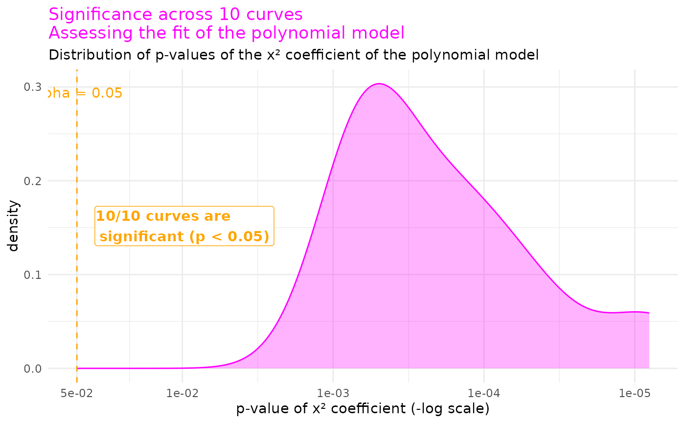
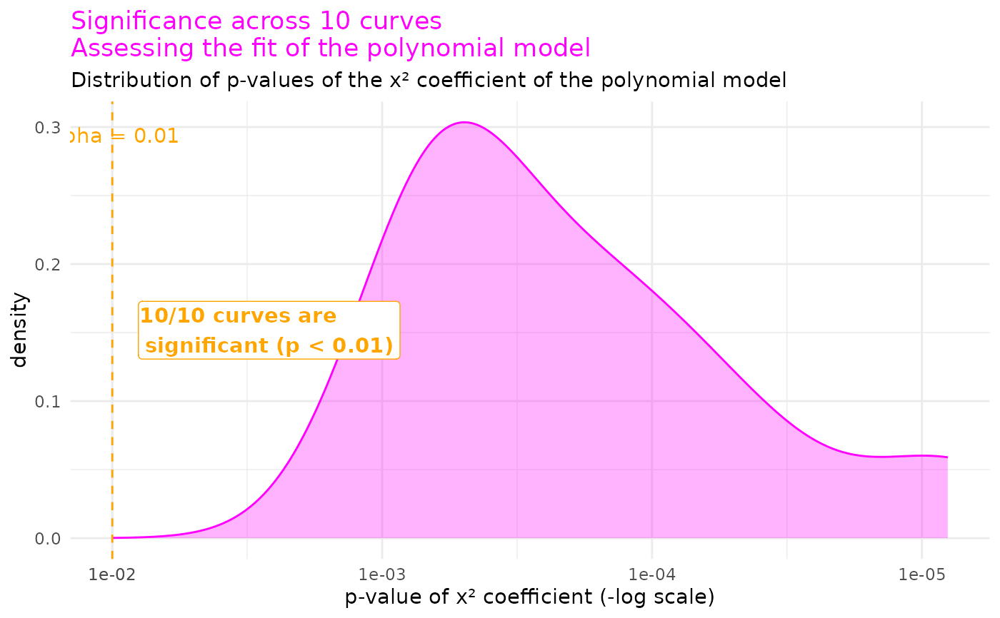

Plot the distribution of polynomial x² coefficient significance across curves
Source:R/model_choice.R
plot_poly_significance.RdCompanion summary view to review_model_choice()'s overplot = TRUE
mode: while the overplotted comparison/residual plots let you assess
curve shape and fit quality at a glance across a whole sample, this
plots the significance of the polynomial term itself across that
same sample — a density of each curve's x² coefficient p-value, on a
log scale, with the number of curves crossing the significance
threshold called out directly. Useful for answering "does switching
to a polynomial model genuinely help, across my whole dataset, or
just for the one curve I happened to look at?"
Arguments
- review
A named list as returned by
review_model_choice()in its default, paginated form (overplot = FALSE) — one entry per curve, each containing amodels$polyelement. Does not accept the single combined figure returned whenoverplot = TRUE.- signif_alpha
Significance threshold. Defaults to
0.05. Used for the vertical threshold line, its accompanying annotations, and the "N of total curves significant" count.
Examples
review <- std_corrected_TDN |> review_model_choice(n_curves = 10, seed = 1)
plot_poly_significance(review)

plot_poly_significance(review, signif_alpha = 0.01)
